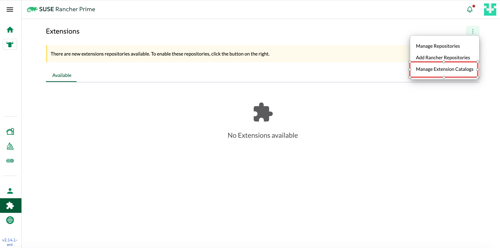
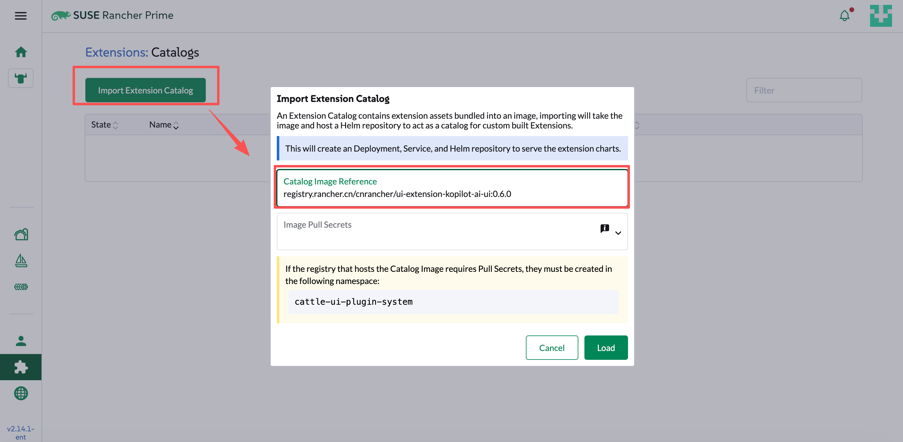
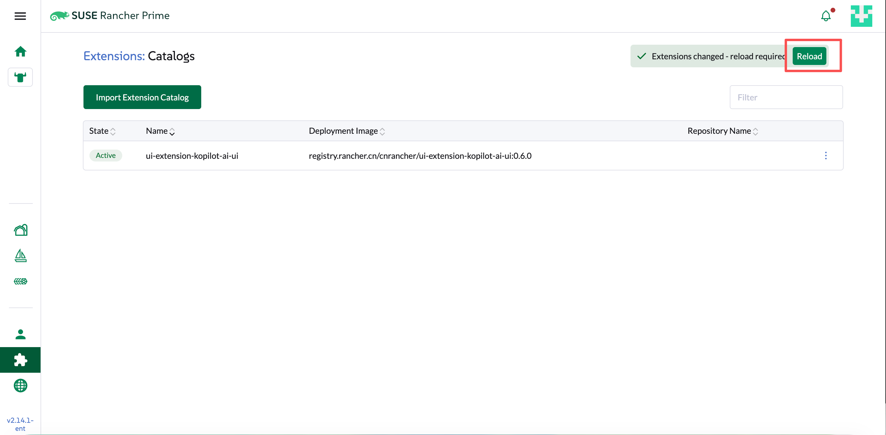
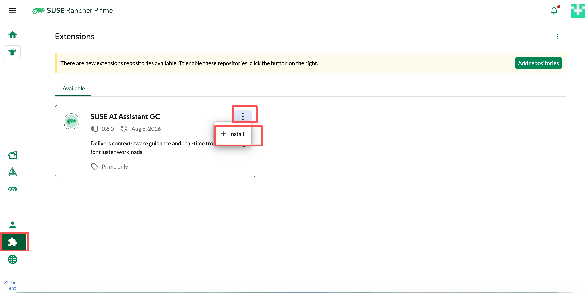
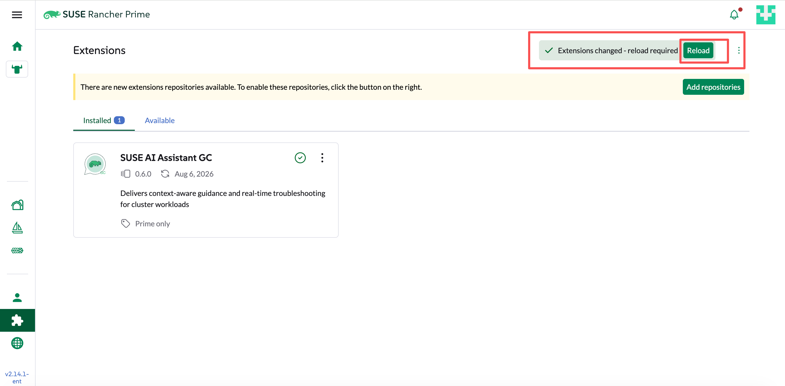

Liz GC 安装部署快速入门
本文介绍如何在 Rancher 环境中部署 Liz GC，并安装 UI Extension，以便在 Rancher UI 中直接使用 AI Assistant。
支持模型矩阵
Liz GC 当前支持以下 LLM 厂商与模型。安装时需提供对应厂商的 API Key。
| LLM 厂商 | 支持模型 |
|---|---|
OpenAI |
|
Gemini |
|
Qwen |
|
DeepSeek |
|
MiMo |
|
Kimi |
|
GLM |
|
安装 cert-manager
Liz GC 使用 cert-manager 签发和管理 TLS 证书。 若 Rancher 环境中已安装 cert-manager，可跳过本节，直接进入 Helm 安装 Liz GC。
helm repo add jetstack https://charts.jetstack.io
helm install cert-manager jetstack/cert-manager \
--namespace cert-manager \
--create-namespace --set crds.enabled=trueHelm 安装 Liz GC
在 Rancher local 集群上安装 Liz GC。
-
从 GitHub Release Assets 下载 Helm Chart：
kopilot-0.6.0.tgz和kopilot-crd-0.6.0.tgz。 -
安装 local-path-provisioner 作为 StorageClass 提供者（也可使用其他 provisioner）。
kubectl apply -f https://raw.githubusercontent.com/rancher/local-path-provisioner/v0.0.36/deploy/local-path-storage.yaml kubectl patch storageclass local-path -p '{"metadata": {"annotations":{"storageclass.kubernetes.io/is-default-class":"true"}}}' -
在 Rancher local 集群上安装 Liz GC：
helm upgrade --install \ -n kopilot-system \ --create-namespace \ kopilot-crd ./kopilot-crd-0.6.0.tgz helm upgrade --install \ -n kopilot-system \ --create-namespace \ --set bootstrapPassword="<your bootstrap password>" \ --set llm.active=gemini \ --set llm.provider=google_genai \ --set llm.apiKey="<your llm api key>" \ --set rancher_sso.enabled=true \ --set rancher_sso.url="<your rancher url>" \ kopilot ./kopilot-0.6.0.tgz
|
这些说明中并没有包含其他安装选项。如果您在执行这些步骤时遇到任何问题，请参考完整的 Liz GC 安装说明 |
安装 Rancher UI Extension
Helm 安装完成后，在 Rancher 中启用 UI Extension，即可在 Rancher UI 中使用 AI Assistant。
-
打开 Rancher，点击左侧 Extensions 菜单，再点击下拉菜单中的 Manage Extension Catalogs，导入 Liz GC UI 扩展。

-
点击 Import Extension Catalog，输入 Catalog Image Reference：
registry.rancher.cn/cnrancher/ui-extension-kopilot-ai-ui:{version}
-
等待扩展目录状态变为 Active 后，点击 Reload 重新加载页面。

-
在 Extensions 页面安装 Kopilot AI Assistant，安装完成后点击 Reload 重新加载页面。

